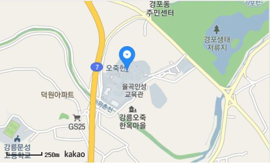

오죽헌/시립박물관
1963년 보물 제165호로 지정된 오죽헌은 우리나라 대표 어머니상 신사임당(1504∼1551)과 그의 아들 율곡 이이(1536∼1
584)가 태어난 유서 깊은 곳이다.
집 주위에 까마귀처럼 검은 대나무가 많아 율곡의 이종사촌 권처균이 자신의 호를 오죽헌이라 지은 데서 비롯된 ‘오죽헌’.



솔향, 바다향, 커피향 그리고 당신의 향기
1963년 보물 제165호로 지정된 오죽헌은 우리나라 대표 어머니상 신사임당(1504∼1551)과 그의 아들 율곡 이이(1536∼1
584)가 태어난 유서 깊은 곳이다.
집 주위에 까마귀처럼 검은 대나무가 많아 율곡의 이종사촌 권처균이 자신의 호를 오죽헌이라 지은 데서 비롯된 ‘오죽헌’.
동양자수박물관은 한·중·일 전통자수를 중심으로 동양자수의 미적세계를 체험하고 공유할 수 있는 문화 예술 공간으로서
질 높은 컬렉션을 통해서 풍요로운 감성의 계발, 교양의 향상, 창의적 교육을 위해 공헌하며, 창작예술인들, 국내외 문화
예술 기관들과 상호협력과 교류를 통해 인류사회 문화발전에 기여하기 위해 설립되었다.


조선 후기의 전형적인 사대부의 저택으로 동별당, 열화당, 활래정, 사당 등이 있으며, 당시에 사용하던 생활용구, 예술품,
의상 등 8,000여점의 유물이 잘 보관되어 있다.


경포주변의 호수 생태계를 복원하고 보존하고 다양한 수중 생물들이 서식할 수 있는 환경을 마련하기 위해 조성되었다.
경포호의 염분도를 낮추고 수질이 정체되지 않게 되어 있으며 시민들을 위한 개방된 광장 및 습지생태를 관찰할 수 있는
시설들이 마련되어있다.


관동팔경 중 으뜸인 경포대는 하늘, 호수, 바다, 술잔, 님의 눈동자의 다섯개의 달을 볼 수 있는 낭만적인 곳이다. 경포호의
둘레는 4.3km로 새바위와 애틋한 사랑의 전설이 깃든 홍장암이 있다.


하얀 파도와 넓은 모래사장이 펼쳐진 해변. 관동팔경의 대표적 명소인 경포대가 있고 해변에 소나무가 병풍처럼 둘러싸여
아늑한 느낌을 주며 수심, 백사장, 수온이 최적인 동해안 최고의 해변이다